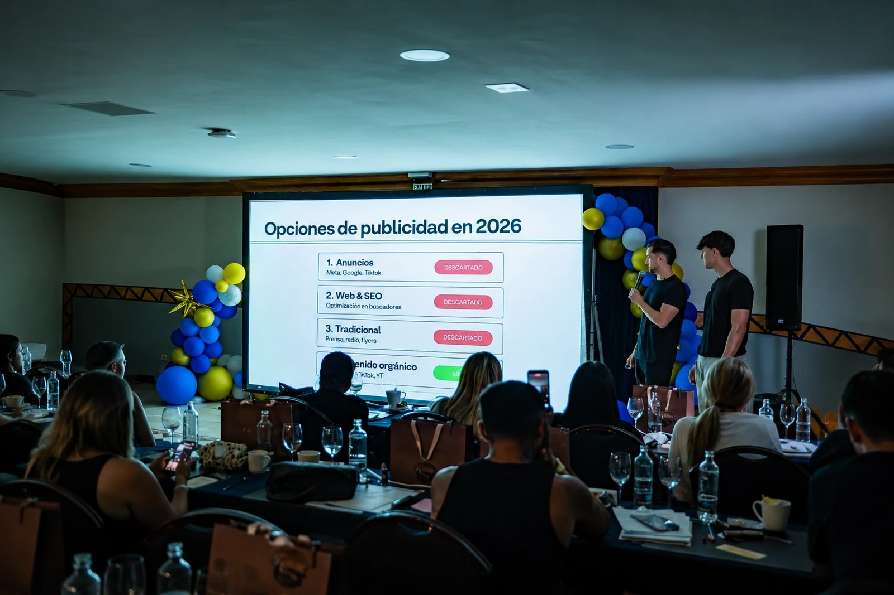
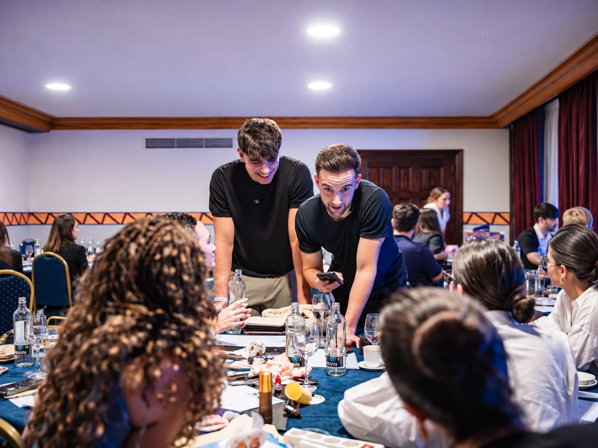

Los días 28 y 29 de mayo de 2026, el sur de Tenerife acogió la tercera edición de PMU Paradise, un congreso de micropigmentación que reunió a algunos de los mejores artistas del sector en España. El evento, organizado por la micropigmentadora valenciana Isabel Collado, quiso contar también con una mirada distinta: la de las redes sociales.
Ahí entramos nosotros. El 29 de mayo, Roger y Esteve, fundadores de Mediatic, impartieron la ponencia «Revive tu Instagram» ante unos 50 asistentes. Fue la primera ponencia de la agencia en un congreso, y un día que recordaremos con especial cariño.

Foto: Javi Martínez
Qué es PMU Paradise
PMU Paradise es un congreso dedicado a la micropigmentación que en 2026 celebró su tercera edición. Durante dos jornadas, artistas reconocidos de toda España compartieron técnicas, experiencias y tendencias con profesionales del sector.
En ese programa, la ponencia de Mediatic fue la única que salía de la temática principal del congreso. Mientras el resto de intervenciones se centraban en la micropigmentación, nuestra charla abordaba una cuestión que preocupa a cualquier profesional con negocio propio: cómo dar a conocer su trabajo y atraer clientes a través de las redes sociales.
Puedes conocer más sobre el congreso en su perfil oficial de Instagram.
Entre los ponentes del evento estuvo Gisela Jorba, especialista en micropigmentación y clienta de Mediatic. Puedes ver el impacto que tiene para ella el contenido que le preparamos en este artículo.
«Revive tu Instagram»: una ponencia pensada para participar
Desde el principio tuvimos claro que no queríamos una charla en la que solo habláramos nosotros. Por eso la preparamos para que fuera muy interactiva, combinando partes explicativas sobre la importancia del contenido con un taller práctico.
En la parte teórica, Roger y Esteve explicaron por qué el contenido en redes sociales es hoy una de las herramientas más eficaces para que un negocio gane visibilidad y clientes, una idea que desarrollamos también en nuestro artículo sobre las opciones de marketing para este 2026. Y desmontamos los errores más habituales en el artículo sobre los mitos de Instagram.

Foto: Javi Martínez
Un taller para escribir el guion perfecto
El momento más especial de la ponencia llegó con el taller. Dividimos a los asistentes en varios grupos y le dimos a cada uno una misión: escribir el guion perfecto para un vídeo sobre una temática concreta. Las temáticas eran divertidas y daban juego, pero tenían algo en común: ningún grupo dominaba el tema que le había tocado.
Cada grupo lo resolvió a su manera. Algunos tiraron de creatividad, otros se inspiraron en contenidos que ya conocían y otros pidieron ayuda a ChatGPT. Después, cada grupo leyó su guion delante de todo el público, que votó cuál era el mejor. Fue uno de los momentos más divertidos de la jornada.
El ejercicio tenía un objetivo claro: demostrar que, incluso ante un tema desconocido, es posible encontrar ideas ganadoras si se sigue un método. Al terminar, compartimos con los asistentes los pasos que seguimos en Mediatic para buscar ideas, probar distintos formatos y ángulos, y construir una estrategia de contenido sólida.
Una acogida que superó las expectativas
La respuesta del público fue excelente. Los asistentes participaron activamente durante toda la ponencia, se implicaron en el taller y plantearon muchas preguntas, tanto durante la charla como al terminar.
Para nosotros fue la confirmación de algo que vemos cada día con nuestros clientes: el contenido en redes sociales se ha convertido en una prioridad para los profesionales que quieren hacer crecer su negocio, sea cual sea su sector.
Gracias, PMU Paradise
Queremos dar las gracias a Isabel Collado y a toda la organización de PMU Paradise por confiar en nosotros para nuestra primera ponencia, y a todas las personas que participaron en ella por su energía, sus preguntas y sus guiones. Meses después tuvimos la oportunidad de repetir experiencia en el Gamma PMU Congress, en San Sebastián.
Puedes ver los resultados de nuestros clientes en la web. Si tienes un negocio y quieres que el contenido trabaje para ti, conoce nuestros servicios de contenido para empresas o contacta con Mediatic.
Preguntas frecuentes
¿Qué es PMU Paradise?
PMU Paradise es un congreso de micropigmentación organizado por la micropigmentadora valenciana Isabel Collado. Su tercera edición se celebró los días 28 y 29 de mayo de 2026 en el sur de Tenerife y reunió a algunos de los mejores artistas del sector en España.
¿De qué trató la ponencia de Mediatic en PMU Paradise?
La ponencia «Revive tu Instagram» trató sobre la importancia de crear contenido en redes sociales para hacer crecer un negocio. La impartieron Roger y Esteve, fundadores de Mediatic, el 29 de mayo de 2026, e incluyó un taller práctico en el que los asistentes escribieron guiones en grupo.
¿Por qué es importante Instagram para un negocio de micropigmentación?
Instagram permite mostrar el trabajo de forma visual, generar confianza y atraer clientes de forma orgánica. Para un negocio de micropigmentación, los vídeos son una forma eficaz de enseñar resultados, explicar técnicas y resolver las dudas de los clientes antes de que reserven una cita.